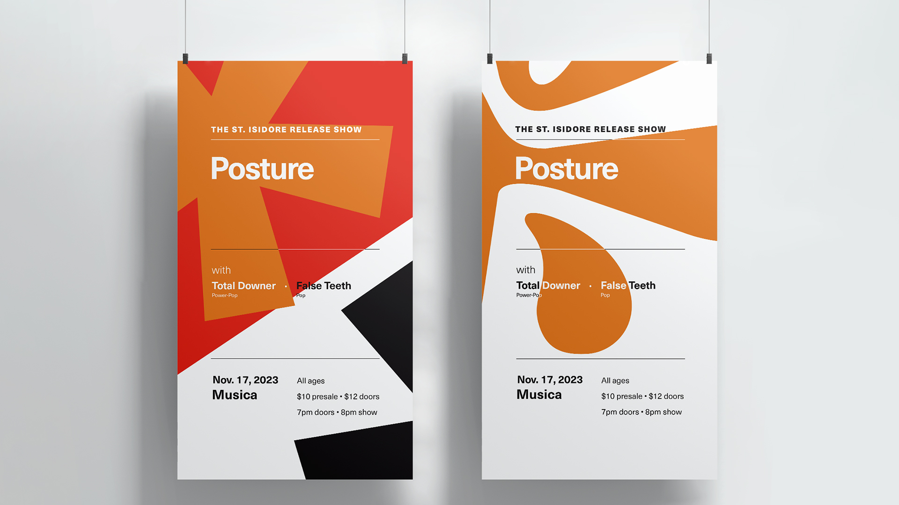
Animation, Print
I had the pleasure of working with Akron-based artist Posture to promote their debut full-length album release, St. Isidore. The goal was to design a cohesive promotional campaign that increased reach and connected the artist to new listeners.
Gen Z and Millennial alternative music listeners.
xxx
In several co-design sessions with the artist, an identity and vision was established for the campaign. The artist wanted the album to have general appeal, but its content and messaging were best-aligned with aspects of irony, performance art, anti-design, and neo-brutalism. The challenge this framed was to create pieces that were both visually appealing but intentionally abrasive or challenging.
As content for the campaign, I created album liner notes, mockups, single art, music videos, lyric videos, Spotify Canvas animations, and motion posters. Later, I designed album art for the St. Isidore demos release. Original album artwork and vinyl layout was designed by Nyki Fetterman.
Motion posters were created to promote the artist’s album-release show through Instagram Reels and TikTok.
Album liner notes designed with ASCII and printed on receipt paper aligned with video content for the campaign and the anti-design aesthetic. It also helped control production costs for vinyl records.
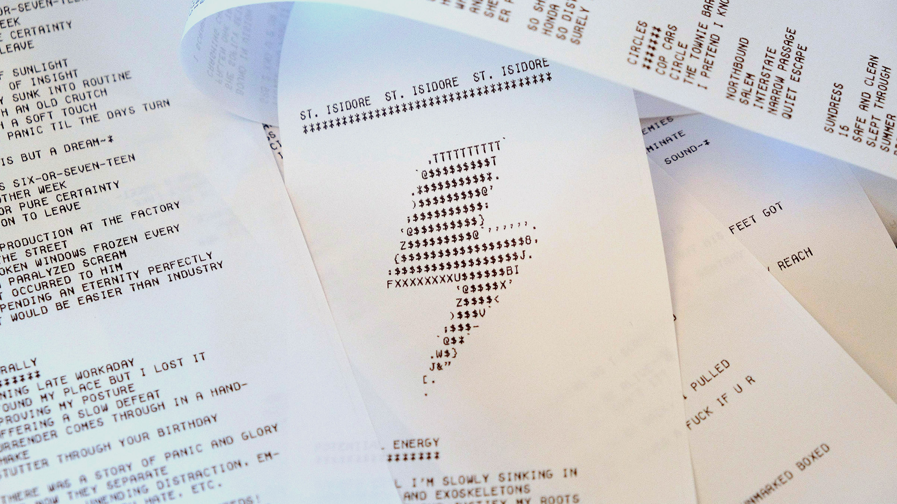
St. Isidore vinyl liner notes printed on receipt paper.
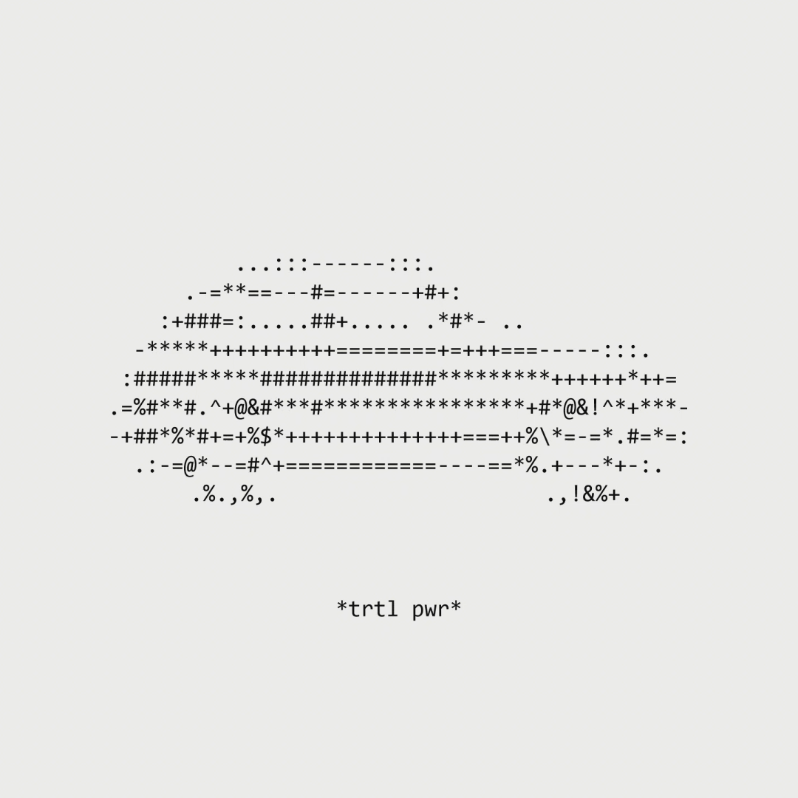
TRTL PWR single art and Spotify canvas generated using creative code.
The art and accompanying Spotify Canvas animation for the single TRTL PWR utilized the same ASCII aesthetic. Lyric visualizers for this track and Shoe used creative code as a medium to generate the visuals with an anti-design aesthetic.
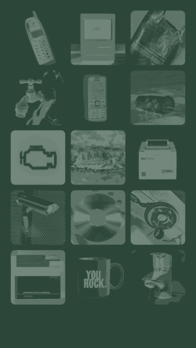
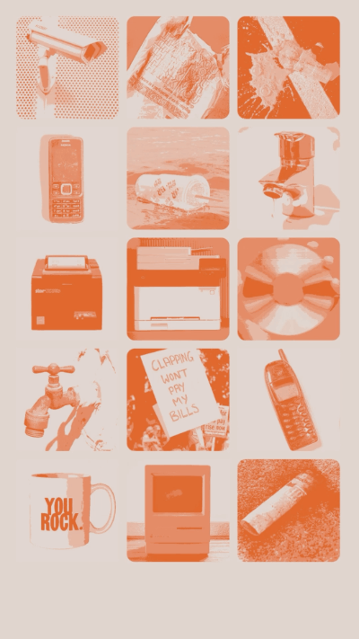
Lyric visualizers for Shoe and TRTL PWR were used for Spotify canvases as well as social media content.
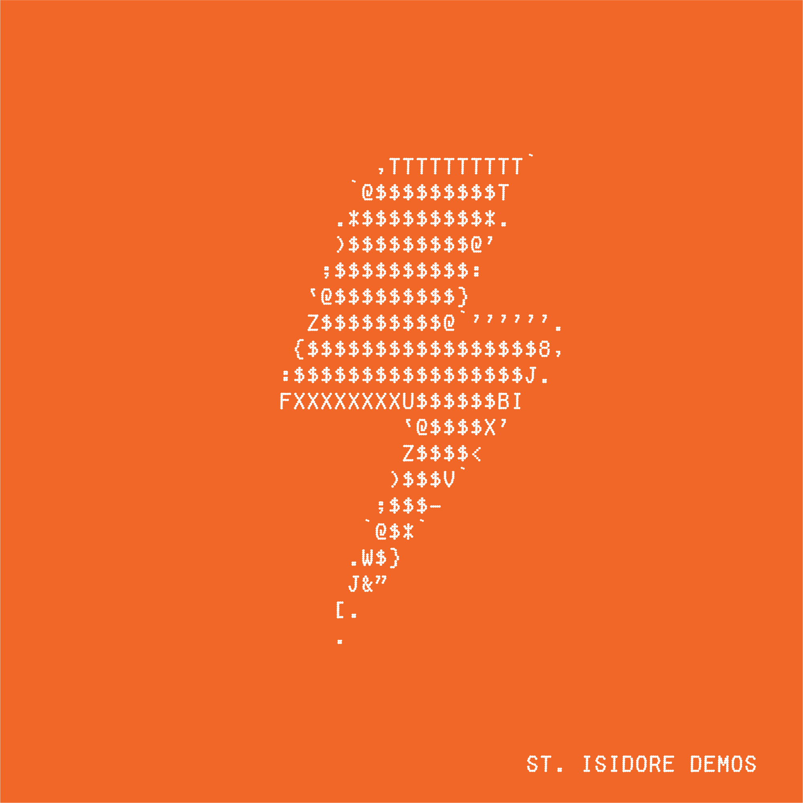
St. Isidore Demos album cover.
Total audience reach for this campaign garnered roughly 76,000 impressions across platforms.
You can enjoy St. Isidore by Posture in all its glory here.
After a co-design session focusing on release goals and another to determine a stylistic direction, explorations were done to find a visual language that was broad enough to allow for flexibility across mediums but specific enough to create a campaign image. The artist's moodboards, references, and ongoing conversations drove the design process.
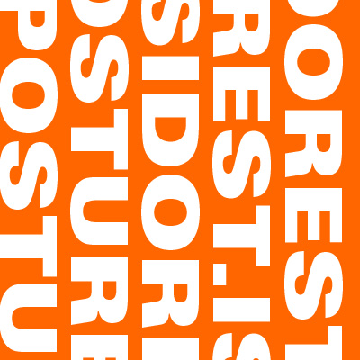
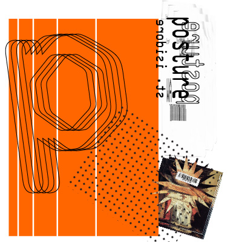
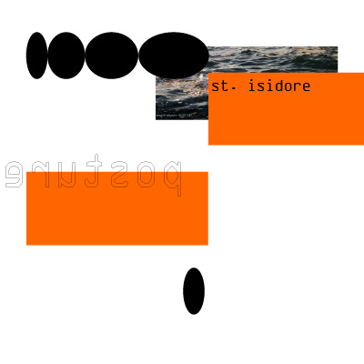
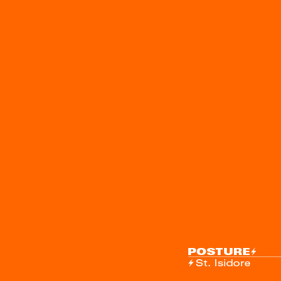
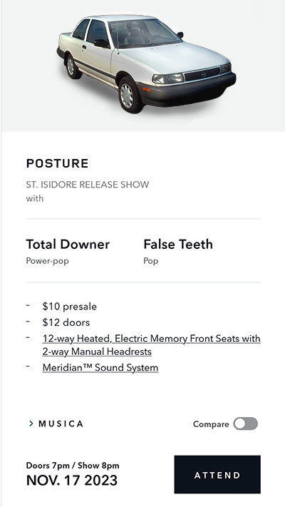
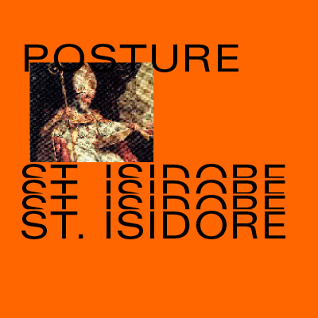